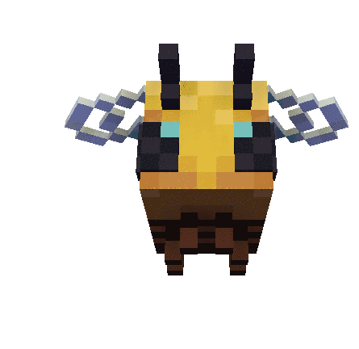

-kiedy powstała
W 1995 roku
-dlaczego jest to język skryptowy
Dlatego ze nie musi zostać skompilowany do kodu maszynowego, aby można było zobaczyć efekty jego działania.
-gdzie jest wykonywany JS (klient lub serwer)
JS jest wykonywany u klienta
-dlaczego jest to bezpieczne narzędzie
JavaScript ma znacznie ograniczone uprawnienia dostępu do zasobów komputera.
-czy jest to język obiektowy , jeśli tak to dlaczego.
Nie jest obiektowym dlatego ze jest skryptowy.
‹input type="button" name="przycisk" value="Nowa Strona" onclick="WinOpen(' ')"›
Obiekt "button" o nazwie przycisk z napisem "nowa strona" wywola funkcje "WinOpen"
window.open("obraz.html","okienko","toolbar=no,directories=no,menubar=no,height=280,width=160,top=200,left=200");
funkcja "window.open"
toolbar=no - ukrywa przyciski katalogów
directories=no, - pokazuje lub ukrywa przyciski katalogów
menubar=no, - ukrywa przegladarke
height=280, - ustawia okns wysokosc 280 px
width=160, - ustawia okns szerokosc 160 px
top=200, - ustawia położenie okna względem góry ekranu 200 px
left=200 - ustawia położenie okna względem lewej strony ekranu 200 px
